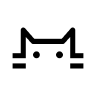

Linguaggi
 Python 3.12.py
Python 3.12.py JavaScript.js
JavaScript.js HTML.html
HTML.html CSS.css
CSS.css- Asterisk.conf
- Shell.sh
Tecnologie
Interfaccia
- WebRTCaudio della chiamata
- Server-Sent Eventsrisposta che arriva man mano
- sessionStorageuna conversazione tra chat e voce
Server
 FastAPI0.162richieste della pagina
FastAPI0.162richieste della pagina- Uvicorn0.54fa girare FastAPI

Pipecat1.16catena dell'audio- aiortc1.16WebRTC sul server
- httpx0.28chiamate all'API
Intelligenza artificiale
- Silero VADcapisce quando hai finito
- sherpa-onnx2.0impronta della voce
- Groqlarge-v3voce → testo, dal sito
 Azure SpeechF0voce → testo, al telefono
Azure SpeechF0voce → testo, al telefono- faster-whisper1.2voce → testo, di riserva
- Piper1.8testo → voce
- ONNX Runtime1.31motore di Piper e Silero
- CTranslate24.9motore di Whisper
Telefonia
- Asterisk22.12 LTSil centralino
- PJSIPSIP con l'operatore
- chan_websocketaudio al server della voce
- Ehiweb VivaVoxil numero 0733 145 0210
Infrastruttura
 Docker Compose29.9 · 5.6voce e centralino
Docker Compose29.9 · 5.6voce e centralino Caddy2.11HTTPS davanti al sito
Caddy2.11HTTPS davanti al sito- Let's Encryptcertificati gratuiti
- Oracle CloudVPS Ampere, 24 GB
 Ubuntu24.04sistema operativo
Ubuntu24.04sistema operativo